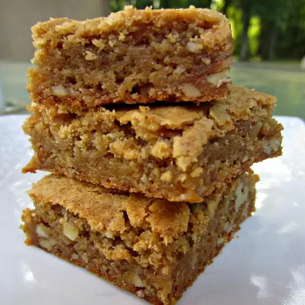

Butterscotch Brownies Recipe

These chewy squares ooze brown sugary butterscotch. They becrumb the lips and besmear the chin, like home-baked goodies should.
Ingredients
- 1 cup butter, melted
- 2 cups packed light brown sugar
- 3 eggs
- 2 teaspoons vanilla extract
- 2 cups all-purpose flour
- ½ teaspoon salt
- 1 ½ teaspoons baking powder
- 1 cup chopped walnuts
Steps
- Preheat oven to 350 degrees F (180 degrees C). Grease an 11x7x2-inch pan.
- Melt 1 cup butter in a large saucepan. Add 2 cups light brown sugar and beat well to mix. Cool the mixture slightly, then beat in eggs and vanilla.
- Sift together all-purpose flour, salt and baking powder. Stir it into the wet ingredients, then add the walnuts or pecans (see Cook's Note). Mix well.
- Spread batter into prepared pan and bake for 30-35 minutes or until a light gold. Cool in the pan for 10 minutes, then turn out of pan and let brownies finish cooling on a rack.
- To Make Frosting: Dissolve coffee in the water. Cream 1/2 cup butter with confectioner's sugar. Beat it until light. Blend the coffee into sugar mixture and spread frosting over the brownies. When frosting has set, cut brownies into squares. Enjoy!
Return to main page